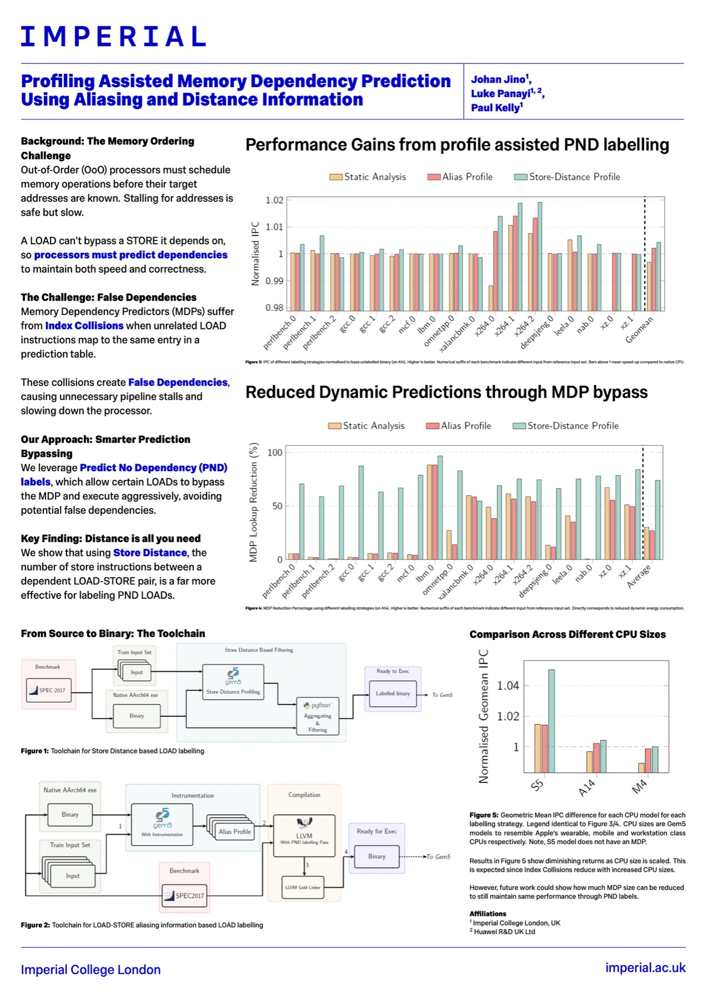

Research · HPCA 2027
PG-MDP
Profile-guided memory dependence prediction for area-constrained cores.
The problem
Out-of-order CPUs guess which earlier stores a load depends on, so independent loads can run early. Small, energy-efficient cores have little room for that predictor's tables, so many loads that never conflict are still held back behind stores. These false dependencies cost performance.
The usual fix is a bigger or more complex predictor. That costs area these cores don't have.
The idea
- Use the compiler and profiling to find loads that are consistently independent of earlier stores.
- Label those loads in the instruction encoding. They skip the predictor and issue as soon as possible.
- If a labelled load does conflict, the core rolls back as usual but doesn't create a predictor entry. The predictor keeps its space for the loads that need it.
My part
The paper grew out of my MEng thesis at Imperial, Compiler Analysis and Profiling Assisted Memory Dependency Prediction. I built LLVM passes that combine SVF static analysis with a store-distance profile to label loads, and evaluated them in gem5 on SPEC CPU2017. The thesis showed a 5.03% geomean IPC gain on a small core.
I'm second author on the paper, with Luke Panayi, Sebastian S. Kim, Alberto Ros, Alexandra Jimborean, Jim Whittaker, Martin Berger and Paul H J Kelly.
Result
Across SPECspeed 2017, PG-MDP cuts predictor queries by 80% and false dependencies by 84%. Geomean IPC on a small core (ROB of 128) rises by 4.6%, to within 1.2% of a predictor with 8x the entries, without scaling any hardware structures.
Poster · REACH 2025
Before the paper, I presented the thesis results as first author in an accepted poster at REACH 2025, Profiling Assisted Memory Dependency Prediction Using Aliasing and Distance Information, with Luke Panayi and Paul Kelly. Its key finding: store distance, the number of stores between a dependent load and store, is the most effective signal for labelling loads.
